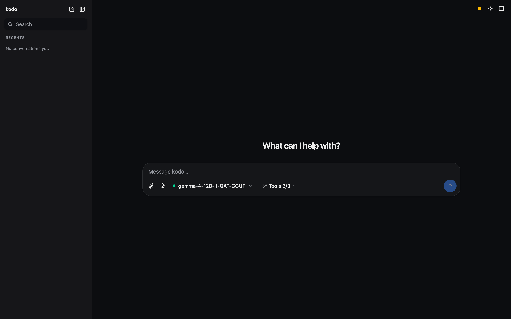

Web UI (serve --ui)¶
heim serve runs the FastAPI app: a browse API, an OpenAI /v1 proxy to the
loaded model, plus /v1/audio/* for speech, and — with --ui — the browser
single-page app (React/Vite + Tailwind).

The model landscape¶
heim runs two families of models — keep them distinct:
- Chat — language models you talk to: text in, text out. Some also read
other input (a vision model sees images; an audio model hears speech) and
some call tools — but their job is generating a text reply. These load into the
runtime (
llama-server/mlx_lm) one at a time. - Voice — audio in/out, not chat: TTS turns text into speech (Kokoro, Dia, …), STT transcribes speech into text (Whisper). These run on demand per request; they're never "loaded" into the chat runtime. See the Voice guide.
A chat model that reads audio is not a voice model — it hears you and answers in text; it never speaks (that's TTS) and transcription is STT's job.
Surfaces¶
Three surfaces, reachable from the sidebar (or the collapsed icon rail):
- Chat — the conversation: pick a chat model in the composer and talk to it (New chat + your recent conversations).
- Voice — the TTS/STT studio (generate speech, clone a voice, transcribe).
- Library — browse every model, in Chat and Voice categories: load a chat model, tag/filter, and see each voice model's card.
Features¶
- Model picker (in the Chat composer) — grouped by format, with per-model
capability icons (tools · vision · audio), a rich hover tooltip
(format/size/context/caps), filter chips, and an eject action. Hidden when
the server is locked (a project assistant, or
--model) — the top-bar badge then shows the bound model. - Tools — a per-server fly-out menu with a master switch, per-server toggle-all, and per-tool switches (scales from 3 tools to hundreds).
- Multimodal input — for vision/audio models, attach images and audio via drag-drop, paste, or the picker, or record from the mic (auto-stops on silence). Images open fullscreen on click; audio plays inline. heim nudges you toward an audio-specialist model when one fits better.
- Text / document attachments — drop, paste, or pick text/code files
(
.md,.py,.json,.csv, …) with any model: their contents are inlined into the prompt as fenced blocks (the message shows a filename chip, not the raw text), so a plain chat model can read a file as context. - Listen (text-to-speech) — a speaker button on each reply reads it aloud
(Markdown/code is stripped first so only the prose is spoken); the settings rail
picks the voice — a picker of Kokoro's 54 built-in voices across 9 languages
(grouped by language), since Kokoro ships built in.
llama-tts/OuteTTS is available as an alternate engine. - Mermaid diagrams —
```mermaidfenced blocks render as live diagrams (theme-aware, lazy-loaded), with a source/diagram toggle and copy; invalid syntax falls back to the source. - Export — a download menu in the top bar exports the open conversation as Markdown (source-form: roles, code fences, reasoning, tool activity, and a model + params header) or PDF (a styled, self-contained document opened in a print window for "Save as PDF"; mermaid diagrams are rendered to inline SVG). Both run client-side from conversation state.
- Settings rail — system prompt (a new chat uses the project default
from
heim.toml; type to override, or clear it to send no system prompt), sampling (with model-recommended defaults shown), and context length (presets + custom; reloads the model). Settings are per conversation, so each chat starts fresh. - System health — a status dot opening the same checks as
heim doctor.
Build the UI once (it's not committed — only its source is):
Then serve it:
heim serve --ui # browse + chat in the browser, switch models
heim serve --ui --port 8000 # pin the port for a stable URL/bookmark
heim serve --ui --model <name> # locked to one model (extension backend)
For UI development, make frontend-dev runs Vite with hot reload (it proxies
/api + /v1 to HEIM_DEV_API or :8000, so run heim serve --port 8000
alongside).
By default serve auto-picks a free port and prints the URL on startup, so it
never collides with your other services. Pass --port (or set HEIM_PORT /
port in heim.toml) to pin a stable address — useful for a browser bookmark or
the Chrome-extension origin. --host overrides the bind address.
The SPA (built to frontend/dist) is served via FastAPI's first-party
app.frontend() with fallback="index.html", so client-side routes resolve to
the SPA while API path operations still match first. If it isn't built yet, the
API still runs and serve --ui says so.
Single-origin proxy¶
The app keeps one stable origin while swapping the underlying runtime:
| Endpoint | Purpose |
|---|---|
GET /api/status |
runtime state (stopped/loading/ready), model, n_ctx, error |
GET /api/library |
runnable chat models + capabilities (vision/audio/tools/context) |
GET /api/voice |
voice models (TTS/STT) with backend + traits, for the Library/studio |
GET /api/model?name= |
one model's card + metadata + recommended sampling |
POST /api/load/{name} |
load/switch a model (?n_ctx= sets context; locked → 409) |
POST /api/unload |
eject the loaded model (frees memory) |
POST /api/chat |
server-side agent loop (tools + multimodal) → typed SSE |
GET /api/tools |
attached MCP tools (namespaced <server>__<tool>) |
GET /api/assistant |
project [assistant] target metadata for UI clients (404 if none); ?verify=1 runs the verify recipe |
POST /api/assistant/bind, /unbind |
install/remove a client-minted credential (the side panel's "Use my login") |
GET /api/doctor |
system-health report (mirrors heim doctor) |
GET /api/voices, POST /api/speak |
list voices (Kokoro + OuteTTS); synthesize text → WAV (chat Listen) |
POST /v1/audio/speech |
OpenAI TTS: text → audio (Kokoro/Dia/…), formats via ffmpeg, voice cloning |
POST /v1/audio/transcriptions |
OpenAI STT: audio → text (Whisper) |
POST /v1/{path} |
stream-proxied to the loaded runtime's /v1 |
GET /health, GET /docs |
health check, OpenAPI docs |
So the SPA only ever talks to serve's origin; serve starts llama-server /
mlx_lm.server on an internal port (auto-picked free by default; pin it with
runtime_port / --runtime-port) and proxies to it.
Locked single-model mode¶
Locks the server to one model: no switching, the composer's model picker is hidden
(the top-bar badge shows the bound model), and a stable /v1. This is the backend for the
Chrome side panel, whose panel points at this endpoint. Set cors_origins
to the extension's origin so it can call across origins (see below).
A project locks too. In a directory with a heim.toml whose [project].model
is set, heim serve binds to that model the same way (a project is a purpose-built
assistant: model + system prompt + tools). Working without a project is free-play
— pick and switch any chat model. An explicit --model overrides a project.
Cross-origin access¶
By default the server is same-origin only: the web UI is served by this same
app so it needs no CORS, and mutating /api / /v1 calls that a browser marks
cross-site (via Sec-Fetch-Site) are rejected with 403. This stops a random
website you visit from driving your local models or MCP tools from the browser
(even a no-preflight "simple" request can execute server-side otherwise). Non-browser
clients (curl, the CLI) and same-origin requests are unaffected.
To allow a real cross-origin caller (the Chrome extension, or a separate dev
server), list its origin in cors_origins (heim.toml or HEIM_CORS_ORIGINS) —
that both enables CORS for it and exempts it from the cross-site guard. ["*"]
re-opens it to everything; avoid that outside throwaway local testing.